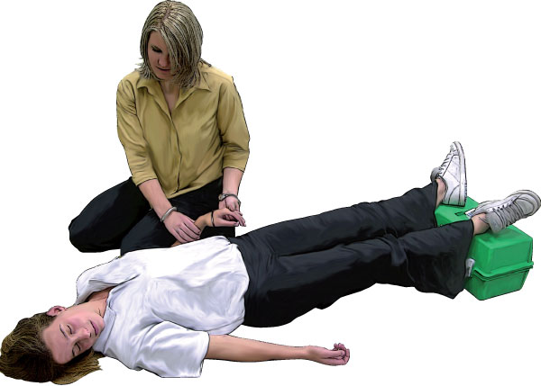

Fainting
Fainting
Fainting occurs when the blood supply to the brain is momentarily inadequate, causing a brief loss of consciousness. Fainting is usually caused by a relatively minor event such as the sight of blood, or just prior to receiving an injection.
Fainting can have no medical significance, or the cause can be a serious disorder. Therefore, treat loss of consciousness as a medical emergency until the signs and symptoms are relieved and the cause is known.
There are many causes of fainting, including:
 Standing for long periods
Standing for long periods
 The sight of needles
The sight of needles
 The sight of blood
The sight of blood
 Pain
Pain
 Emotional events
Emotional events
 Heat
Heat

Signs and Symptoms
 dizziness or feeling light headed
dizziness or feeling light headed
 nausea
nausea
 pale, cool and clammy skin
pale, cool and clammy skin
 anxious
anxious
 collapse
collapse
 loss of consciousness
loss of consciousness
 rapid recovery after being laid flat
rapid recovery after being laid flat

Care and Treatment
Simple Faint
 if unconscious – recovery position
if unconscious – recovery position
 raise the legs if possible
raise the legs if possible
 if conscious – lay the casualty flat and raise the legs if possible
if conscious – lay the casualty flat and raise the legs if possible
 if not fully recovered in a few minutes, call Triple Zero (000) for an ambulance
if not fully recovered in a few minutes, call Triple Zero (000) for an ambulance
 if the casualty was injured in the fall, treat any injuries appropriately
if the casualty was injured in the fall, treat any injuries appropriately
Heat Syncope
 recovery position
recovery position
 cool casualty by fanning
cool casualty by fanning
 loosen and remove excessive clothing
loosen and remove excessive clothing
